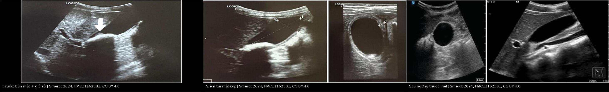
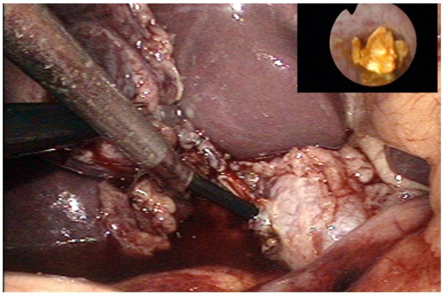
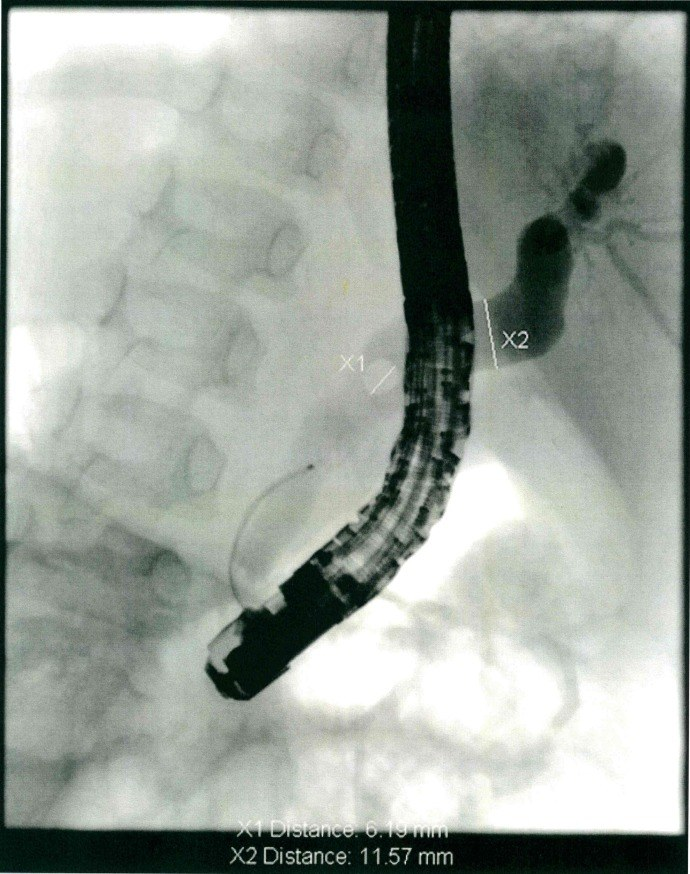

6146 — Sỏi túi mật và sỏi ống mật chủ ở trẻ / Pediatric cholelithiasis & choledocholithiasis
Tags: pattern:soi-tui-mat pattern:soi-bun pattern:gia-soi-thuoc pattern:day-thanh-tui-mat pattern:gian-ong-mat-chu pattern:khuyet-long-ong-mat vung:tui-mat vung:ong-mat vung:o-bung protocol:sieu-am-bung protocol:MRCP protocol:ERCP protocol:noi-soi-tui-mat
Mức chắc chắn (certainty): tổng hợp y văn (literature synthesis) — 1 đoàn hệ 380 trẻ (Cureus 2026, PMC13548732, CC BY), 1 đoàn hệ 185 trẻ (Transl Pediatr 2025, PMC12597193, CC BY-NC-ND — chỉ dùng số liệu, không tạo phái sinh ảnh), 1 tổng quan cơ chế (J Clin Med 2022, PMC9657413, CC BY), 1 ca nguyên văn có ảnh (Oxf Med Case Reports 2024, PMC11162581, CC BY 4.0), 1 đoàn hệ ERCP nhi 70 ca (Medicine 2026, PMC13166795, CC BY) và 1 đoàn hệ 147 ca cắt túi mật nội soi (PLoS One 2018, PMC5953441, CC BY). Nhóm không có bệnh nhân của mình; chỗ hai đoàn hệ mâu thuẫn nhau về BMI (380 trẻ Ấn Độ: béo phì là yếu tố nguy cơ tăng dần; 185 trẻ Thiên Tân: 77,6% BMI bình thường) được ghi rõ là khác biệt quần thể, không chọn bừa.
Câu chốt: Sỏi mật ở trẻ không phải bệnh của người lớn thu nhỏ. Ba số phải thuộc: (1) tỉ lệ hiện mắc 0,1–2,0% và đang tăng, trong đó 47,9% không tìm được nguyên nhân và ~20% hoàn toàn không triệu chứng; (2) sỏi bùn/giả sỏi do ceftriaxone gặp 4,1–27,3% người dùng thuốc và tự tan sau khi ngừng thuốc — cắt túi mật ở nhóm này là mổ oan; (3) siêu âm là đầu tay nhưng BỎ SÓT sỏi ống mật chủ (380 trẻ: 0 ca phát hiện sỏi OMC trên siêu âm) → nghi sỏi OMC phải MRCP/EUS, và ERCP nhi đạt thành công 91,4%, biến chứng 8,6% chảy máu / 1,4% viêm tụy.
1. Tổng quan bệnh học – cơ chế hình ảnh
1.1 Dịch tễ và sự dịch chuyển nguyên nhân
- Hiện mắc 0,1–2,0% ở trẻ (dẫn trong PMC12597193); bệnh đang tăng cùng béo phì nhi.
- 380 trẻ < 15 tuổi, 2013–2025 (Bắc Ấn Độ): tuổi trung bình 12,34 ± 1,54; 11–14 tuổi 55,8%, 5–10 tuổi 34,2%, < 5 tuổi chỉ 10,0%; nam 65,3% (nam:nữ ≈ 1,9:1) — ngược với người lớn (nữ nhiều hơn).
- Yếu tố nguy cơ: tiền sử gia đình 18,4%, đã dùng kháng sinh trước đó 14,7%, không rõ nguyên nhân 47,9%; sỏi hỗn hợp 64,7%.
- Xu hướng 13 năm trong cùng bệnh viện: sỏi vô căn 20,0% → 57,5%, sỏi liên quan béo phì 2,0% → 13,0%, sỏi do tan máu 14,0% → 2,0% — tức bệnh tan máu không còn là nguyên nhân hàng đầu.
- 185 trẻ Thiên Tân (2017–2024): sỏi túi mật 57,8%, sỏi đường mật 25,4%, cả hai 16,8%; tuổi khởi phát trung vị 7,5 (3,7–11,0); chỉ 22,4% thừa cân/béo phì, ~60% BMI bình thường; bệnh tan máu 21,1% (trong đó 32/39 là tăng hồng cầu di truyền).
- Viêm túi mật ở trẻ hiếm: < 1% đến 4% tuỳ nghiên cứu (PMC11162581) — khác người lớn (95% viêm túi mật có sỏi).
1.2 Vật lý: vì sao sỏi "có bóng lưng", bùn thì không — và vì sao bùn tan
- Bóng lưng sau (posterior acoustic shadowing): sỏi là bề mặt phản xạ âm rất mạnh (chênh lệch trở kháng âm giữa mật lỏng và tinh thể cholesterol/canxi). Tia siêu âm bị phản xạ toàn phần ở mặt trước → không còn năng lượng đi tiếp → phía sau sỏi là dải tối (bóng lưng). Bóng lưng chỉ rõ khi sỏi ≥ 3–5 mm và nằm trong mật (không bị thành túi mật che).
- Sỏi cholesterol gần như thuần có trở kháng gần với mật → có thể KHÔNG bóng lưng, chỉ là điểm tăng âm; đây là lý do không được loại sỏi chỉ vì thiếu bóng lưng (khác người lớn hay dạy).
- Sỏi bùn (biliary sludge) = tinh thể cholesterol monohydrat + muối canxi bilirubinat + glycoprotein lơ lửng, hạt < bước sóng → tán xạ yếu, tạo mức echo thấp–trung bình, KHÔNG bóng lưng, di chuyển chậm theo tư thế ("sludge ball"). Vì là cặn lơ lửng chứ không phải khối rắn, bùn có thể tan lại khi hết yếu tố thúc đẩy.
- Giả sỏi do ceftriaxone: ceftriaxone bài tiết qua mật dưới dạng anion, gặp canxi trong mật → kết tủa muối canxi–ceftriaxone không tan. Trên siêu âm bắt chước sỏi thật (tăng âm, có khi có bóng lưng) nhưng tan hoàn toàn sau khi ngừng thuốc — vì kết tủa hoà tan lại khi nồng độ thuốc trong mật giảm.
- Sỏi sắc tố (pigment stone): do tan máu mạn → bilirubin không liên hợp tăng trong mật → kết tủa canxi bilirubinat; thường nhiều viên nhỏ, đen, cản quang kém.
- Thành túi mật dày: viêm → phù gian bào + thấm dịch → dày thành > 3 mm và quầng giảm âm dưới thanh mạc; khi viêm lan ra mỡ quanh túi mật → dịch quanh túi mật (dấu hiệu viêm cấp, không phải sỏi đơn thuần).
1.3 Vì sao "không triệu chứng" là nhóm lớn — và vì sao điều đó đổi cách xử trí
- 380 trẻ: 20,5% (78) phát hiện tình cờ, không triệu chứng; triệu chứng hay gặp nhất là đau thượng vị mơ hồ 60,0%, khó tiêu 45,3%, đau hạ sườn phải cấp 44,2% — triệu chứng rất "mờ", dễ bị coi là đau bụng chức năng.
- Bùn/sỏi dạng cát: ~50% tự hết, 10–15% có triệu chứng trong 3 năm (dẫn trong PMC12597193) → theo dõi là hợp lý, không mổ ngay.
- Hệ quả: chỉ định mổ dựa trên TRIỆU CHỨNG + tổn thương cấu trúc, không dựa trên "thấy sỏi là mổ".
2. Mẫu hình + chẩn đoán phân biệt theo vị trí (gamut)
2.1 Gamut theo hình thái trong túi mật (siêu âm)
- Điểm tăng âm + bóng lưng + di động theo tư thế: sỏi thật (hỗn hợp/cholesterol/sắc tố).
- Mức echo thấp, không bóng lưng, lắng theo tư thế: sỏi bùn/sludge, giả sỏi ceftriaxone, máu/mủ đặc trong lòng túi mật.
- Nốt tăng âm cố định, không bóng lưng, không di động: polyp cholesterol, u tuyến (adenoma), u nhú.
- Thành dày > 3 mm + dịch quanh túi mật + Murphy dương: viêm túi mật cấp (có hoặc không sỏi).
- Túi mật "hai buồng" / vách: túi mật đôi (double gallbladder) — ca trong PMC12597193 (Hình 3).
2.2 Gamut theo đường mật (giãn ống + khuyết lòng)
- Giãn ống mật chủ hình nang, không có khuyết lòng: nang ống mật chủ (bài 6137).
- Giãn ống mật chủ + khuyết lòng tròn/di động: sỏi ống mật chủ.
- Giãn ống mật trong gan + hẹp eo: xơ gan ứ mật/bệnh đường mật; ở trẻ sơ sinh nghĩ teo đường mật (bài 625).
- Không giãn ống nhưng có sỏi trong ống: sỏi OMC sớm — siêu âm dễ bỏ, cần MRCP.
2.3 Gamut theo bối cảnh lâm sàng
- Trẻ đang truyền ceftriaxone liều cao, đau hạ sườn phải sau 5–10 ngày: giả sỏi do thuốc.
- Trẻ tan máu (tăng hồng cầu di truyền, thalassemia, hồng cầu hình liềm): sỏi sắc tố; ở nhóm này cắt lách ± cắt túi mật thường làm cùng lúc.
- Trẻ béo phì/dậy thì sớm, đau bụng tái diễn: sỏi cholesterol/hỗn hợp.
- Trẻ sơ sinh/nhũ nhi vàng da tắc mật: nang ống mật chủ / teo đường mật / sỏi bùn do nuôi ăn tĩnh mạch — không phải sỏi người lớn.
3. Bảng so sánh phân biệt (ma trận đối chiếu)
| Thực thể (entity) | Hình ảnh điển hình | Chốt vào (rule-in) | Chốt loại (rule-out) | Gợi ý xác nhận |
|---|---|---|---|---|
| Sỏi túi mật thật (hỗn hợp/cholesterol) | Điểm tăng âm + bóng lưng sạch, di động theo tư thế; nhiều viên 2–20 mm; thành túi mật mỏng | Bóng lưng + di động + nhiều viên | Không bóng lưng + tan sau ngừng thuốc → không phải sỏi thật | Siêu âm lặp sau 4–6 tuần nếu nghi bùn; X-quang chỉ thấy 10–15% sỏi |
| Sỏi bùn / giả sỏi ceftriaxone | Tăng âm mức thấp, KHÔNG bóng lưng, lắng thành lớp; ± dày thành, dịch quanh túi mật | Ceftriaxone trong 1–2 tuần trước + hình ảnh trên | Bóng lưng rõ + tồn tại > 3 tháng → sỏi thật | Ngừng thuốc rồi siêu âm lại 2–6 tuần: tan hoàn toàn = giả sỏi |
| Polyp / u tuyến túi mật | Nốt tăng âm cố định, không bóng lưng, không di động, thường < 10 mm, đơn độc | Cố định + không bóng lưng + không đổi tư thế | Di động + bóng lưng → sỏi | Doppler (mạch nuôi), theo dõi 6–12 tháng |
| Viêm túi mật cấp | Thành > 3 mm, quầng giảm âm, dịch quanh túi mật, căng to, Murphy siêu âm dương | Thành > 3 mm + dịch quanh + Murphy (+) + sốt/đau | Thành mỏng, không dịch quanh → sỏi đơn thuần | Siêu âm + CRP/BC; CT nếu nghi thủng |
| Sỏi ống mật chủ | Giãn OMC + khuyết lòng; siêu âm kém nhạy ở trẻ, dễ bỏ khi ống chưa giãn | Giãn OMC + vàng da/ALT-ALP tăng + khuyết lòng trên MRCP | Siêu âm bình thường KHÔNG loại trừ (380 trẻ: 0 ca thấy sỏi OMC) | MRCP, EUS; ERCP khi cần lấy sỏi (thành công 91,4%) |
| Nang ống mật chủ (bài 6137) | Giãn hình nang ống mật chủ/ống gan chung; có thể kèm sỏi | Giãn nang khu trú + MRCP thấy nang | Ống đều, chỉ có khuyết lòng → sỏi | MRCP; không nong/ERCP đơn thuần — cần mổ |
| Sỏi sắc tố do tan máu | Nhiều viên nhỏ đen, tăng âm, bóng lưng yếu; lách to, thiếu máu | Bệnh tan máu + nhiều sỏi nhỏ + lách to | Sỏi đơn độc lớn, không tan máu → sỏi cholesterol | CTM, reticulocyte, điện di Hb; cắt lách ± cắt túi mật cùng lúc |
3.1 Bốn câu hỏi đọc siêu âm theo thứ tự
- Có sỏi thật không? (bóng lưng + di động) — nếu không, nghĩ bùn/giả sỏi.
- Thành túi mật dày bao nhiêu? > 3 mm = viêm; đo ở mặt cắt ngang qua gan, không đo chỗ tiếp giáp gan.
- Có dịch quanh túi mật / Murphy siêu âm dương? → viêm cấp, cần xử trí sớm.
- Ống mật chủ có giãn không? — nếu giãn hoặc vàng da/ALP tăng, bắt buộc MRCP dù siêu âm "sạch".
4. Protocol chụp + phân tầng xử trí
4.1 Protocol
- Siêu âm bụng là đầu tay, không cần chuẩn bị đặc biệt: đầu dò convex 5–8 MHz (trẻ nhỏ dùng linear 7–12 MHz), nhịn ăn 4–6 giờ nếu hợp tác; chụp mặt cắt dọc + ngang qua túi mật, đổi tư thế đứng/ngồi để xem sỏi di động; đo thành túi mật, đường kính ống mật chủ (bình thường ≤ 4 mm ở trẻ, tăng theo tuổi).
- Không dùng X-quang bụng để tìm sỏi: chỉ 10–15% sỏi cản quang.
- MRCP khi nghi sỏi OMC hoặc giãn ống mật: không cần cản quang, không tia xạ; phân biệt sỏi (khuyết lòng tròn) với nang ống mật chủ (giãn hình nang).
- ERCP = điều trị, không phải chẩn đoán: lấy sỏi OMC, đặt stent khi hẹp. Ở trẻ 70 ca dùng duodenoscope người lớn: thành công 91,4% (người lớn 95,2%, p = 0,278), chảy máu 8,6%, viêm tụy 1,4%, không tử vong.
- CT bụng chỉ khi nghi biến chứng (thủng, áp-xe) hoặc bệnh cảnh cấp không rõ.
4.2 Phân tầng xử trí (theo triệu chứng, không theo "thấy sỏi")
flowchart TD
A[Trẻ đau bụng / tình cờ thấy sỏi trên siêu âm] --> B[Siêu âm bụng: sỏi thật hay bùn?]
B -->|Bùn / nghi ceftriaxone| C[Ngừng thuốc nếu được, siêu âm lại 2-6 tuần]
C --> D{Tan hết?}
D -->|Có| E[Giả sỏi - không mổ, không theo dõi dài]
D -->|Không| B
B -->|Sỏi thật, không triệu chứng| F[Theo dõi: siêu âm 6-12 tháng + dặn dấu hiệu cấp]
B -->|Sỏi thật + triệu chứng| G{Vàng da / ALT-ALP tăng / OMC giãn?}
G -->|Có| H[MRCP - nghi sỏi OMC]
H -->|Sỏi OMC| I[ERCP lấy sỏi hoặc mổ nội soi + mở OMC]
H -->|Không sỏi OMC| J[Cắt túi mật nội soi]
G -->|Không| J
J --> K[Kiểm tra ống mật trong mổ; theo dõi 2-4 tuần]
F --> L[Xuất hiện đau cấp / viêm túi mật -> chuyển J]
- Theo dõi (asymptomatic): siêu âm mỗi 6–12 tháng; ~50% bùn tự hết, 10–15% có triệu chứng trong 3 năm.
- Cắt túi mật nội soi (LC) = chuẩn cho sỏi có triệu chứng: 380 trẻ, LC thành công 96,8%, chuyển mổ hở 2,1%, không biến chứng 81,0%, thời gian mổ 29,0 ± 6,4 phút, nằm viện 1,9 ± 0,8 ngày, về sinh hoạt 4,0 ± 1,2 ngày.
- Yếu tố nguy cơ biến chứng sau mổ (đa biến): thừa cân/béo phì AOR 2,63 (1,31–5,27), bệnh tan máu AOR 2,18 (1,01–4,71), sỏi nhiều viên AOR 2,34 (1,29–4,26).
- Bảo tồn túi mật (lấy sỏi qua nội soi): cân nhắc khi hình thái và chức năng túi mật bình thường (7 ca trong PMC12597193) — nhưng có nguy cơ tái phát, phải theo dõi.
5. Biến thể bình thường và cạm bẫy
- Bùn mật ở trẻ sơ sinh/nuôi ăn tĩnh mạch kéo dài là hiện tượng thường gặp và hồi phục, không phải sỏi.
- Ceftriaxone: "sỏi" xuất hiện sau 5–10 ngày, đau hạ sườn phải, có khi viêm túi mật thật — tỉ lệ 4,1–27,3% người dùng, triệu chứng < 0,1%. Y văn 1991–2022 chỉ 30 ca có triệu chứng, 16 là trẻ. Ngừng thuốc là điều trị — ca nguyên văn 8 tuổi hết hoàn toàn trên siêu âm.
- Siêu âm "không thấy sỏi OMC" KHÔNG loại trừ sỏi OMC: trong 380 trẻ không ca nào thấy sỏi OMC trên siêu âm dù có ca sỏi đường mật. Vàng da + ALP/GGT tăng = chỉ định MRCP.
- Bỏ sót nguyên nhân phía trên: viêm đại tràng/ung thư đại tràng gây giãn manh tràng có thể làm ứ mật, nhưng ở trẻ hẹp đường mật do thuốc/xơ hóa cũng gây giãn — đừng quy tất cả cho sỏi.
- Cắt túi mật ở trẻ có bệnh tan máu: nên mổ cùng lúc với cắt lách nếu có chỉ định; mổ riêng lẻ làm tăng số lần gây mê và nguy cơ cơn tan máu.
- Không nong/đặt stent cho nang ống mật chủ rồi coi là đã điều trị — nang phải cắt + nối mật ruột (bài 6137), vì nguy cơ ung thư đường mật về sau.
- BMI bình thường không loại trừ: 77,6% trẻ trong đoàn hệ Thiên Tân có BMI bình thường — đừng chỉ tầm soát ở trẻ béo.
6. Tự lượng giá — Blind Quiz
Ca 1 — Nữ 8 tuổi, viêm màng não mủ đang truyền ceftriaxone 2 g/ngày; ngày thứ 7 đau quặn hạ sườn phải 9 giờ, nôn, Murphy dương.

- Hỏi: (1) Mô tả ba ảnh; (2) chẩn đoán và vì sao không cắt túi mật; (3) theo dõi thế nào?
Bấm để hiện đáp án
- Dấu hiệu: (A) trong lòng túi mật có cấu trúc tăng âm kèm bùn (mũi tên trắng); (B) thành túi mật dày, phù, có dịch quanh túi mật — viêm túi mật cấp; (C) sau ngừng thuốc: túi mật trở lại bình thường, sỏi và bùn biến mất hoàn toàn.
- Chẩn đoán: giả sỏi + viêm túi mật do ceftriaxone (ceftriaxone pseudolithiasis) — kết tủa canxi–ceftriaxone trong mật; tan khi nồng độ thuốc giảm.
- Vì sao không mổ: bệnh tự hồi phục sau ngừng thuốc; chỉ 30 ca có triệu chứng trong y văn 1991–2022. Điều trị: ngừng ceftriaxone, dịch, giảm đau, kháng sinh thay thế.
- Theo dõi: siêu âm lại sau 2–6 tuần; nếu không tan hoặc bóng lưng rõ → đổi hướng sang sỏi thật.
- Nguồn ảnh: Smerat MI và cs., Oxf Med Case Reports 2024;2024(6):omae062, PMC11162581 Fig. 2, 3, 4 — CC BY 4.0, ảnh nguyên bản (ghép letterbox bằng
tools/make_composite.py, không crop/kéo giãn).
Ca 2 — Bé trai 12 tuổi, đau hạ sườn phải tái diễn 5 năm, đợt này vàng da + amylase tăng; siêu âm thấy sỏi túi mật, ống mật chủ 9 mm.

- Hỏi: Vì sao phải khám ống mật chủ? Hai cách lấy sỏi OMC ở trẻ và chọn cách nào?
Bấm để hiện đáp án
- Dấu hiệu: đầu ống soi trong ống túi mật (transcystic), trong lòng ống mật là sỏi vàng, tròn, di động; ống mật chủ giãn.
- Chẩn đoán: sỏi ống mật chủ + sỏi túi mật + viêm tụy do sỏi (biliary pancreatitis).
- Vì sao khám OMC: giãn ống + vàng da + men tụy tăng; siêu âm bỏ sót sỏi OMC.
- Hai cách: ERCP (thành công 91,4%, chảy máu 8,6%, viêm tụy 1,4%) hoặc mổ nội soi cắt túi mật + mở ống mật chủ lấy sỏi một thì (tránh 2 lần thủ thuật, giữ cơ vòng Oddi).
- Nguồn ảnh: Pogorelić Z và cs., Children (Basel) 2022;9(10):1583, PMC9601212 Fig. 2 — CC BY 4.0, ảnh nguyên bản.
Ca 3 — Cùng bệnh nhi, phim chụp trong ERCP.

- Hỏi: Xác định hai dấu hiệu X1/X2. Khi nào không dùng ERCP mà mổ?
Bấm để hiện đáp án
- Dấu hiệu: X1 = khuyết lòng tròn trong ống mật chủ (sỏi); X2 = giãn ống mật chủ phía trên.
- Chẩn đoán: sỏi ống mật chủ trên nền sỏi túi mật.
- Khi nào mổ thay ERCP: nang ống mật chủ (ERCP không chữa được, phải cắt nang + nối mật ruột, bài 6137), thủng/viêm phúc mạc, trẻ quá nhỏ không đưa được duodenoscope, hoặc thất bại 2 lần.
- Sau ERCP vẫn phải cắt túi mật (nguồn sỏi) — nếu không, tái phát cao.
- Nguồn ảnh: Frybova B và cs., PLoS One 2018;13(5):e0196475, PMC5953441 Fig. 1 — CC BY 4.0, ảnh nguyên bản.
Bài liên quan chéo
- 6137 – Nang ống mật chủ ở trẻ — giãn ống mật hình nang, hàng phân biệt bắt buộc và không được nong/stent.
- 6135 – Viêm tụy cấp ở trẻ — biến chứng sỏi mật gây viêm tụy.
- 6145 – Viêm tụy tự miễn ở trẻ — vàng da tắc mật ở trẻ, DDx của "tụy to + giãn ống".
- 130 – Túi mật: sỏi, viêm cấp/mạn, adenomyomatosis — nền tảng người lớn của cùng bệnh lý.
- 131 – Tắc mật
- 600 – Tổng quan Nhi khoa
Ảnh
- Tên file:
6146_soi-tui-mat_Modality_SourceID.jpg; nguồn + giấy phép từng ảnh ởimages/CREDITS.md. - Ảnh ghép
images/composite_pseudolithiasis.jpgtạo bằngtools/make_composite.py(letterbox nền đen, không crop/kéo giãn), 3 ô đều CC BY 4.0. - Không tải ảnh từ PMC12597193 (CC BY-NC-ND): chỉ dùng số liệu.
Không dùng để chẩn đoán độc lập khi chưa có người hướng dẫn.